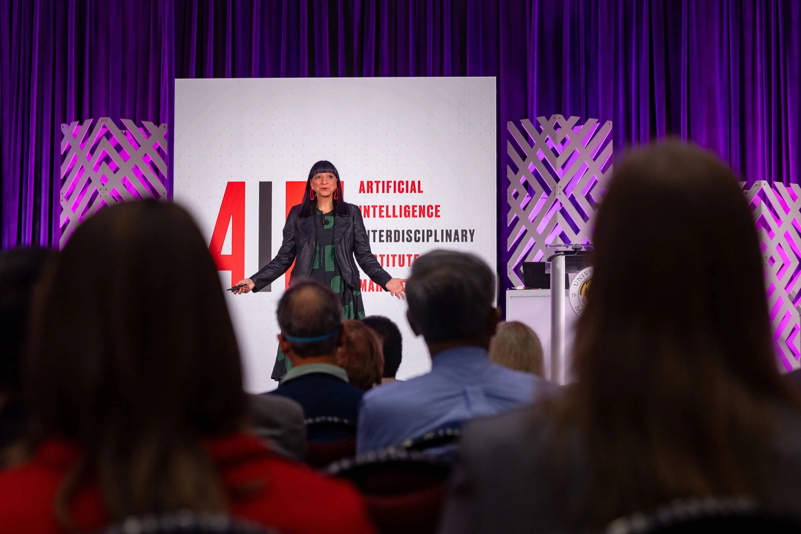
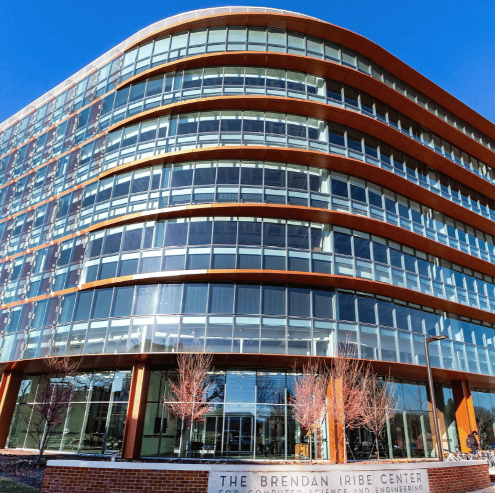
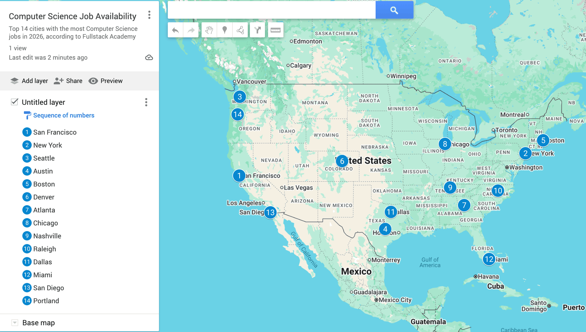

University of Maryland's Computer Science Department is Evolving to Keep Pace
The development of Artificial Intelligence has been transformative worldwide. As the prevalence of AI grows, university computer science programs must evolve or risk becoming obsolete.
The University of Maryland’s Computer Science program is ranked number 16 nationally and number nine among other public universities. The Computer Science program at UMD teaches students how to problem solve.
The major is always evolving to accommodate the consistent changes in Computer Science, including the use of AI.
In response to the growth of AI, UMD added an Artificial Intelligence Masters of Science to their program to “prepare graduates to develop AI solutions that enhance human well-being, promote fairness, and integrate seamlessly into social and professional context,” according to the Computer, Mathematical, and Natural Sciences website.
The Masters in AI is a 30 credit program that is expected to take two years to complete. UMD announced the new masters program on April 9, 2024, and it was open for fall 2025 entries.

The masters program is small but is expected to grow. According to Rumya Ravi from the UMD Science Academy, “The number of registered Artificial Intelligence Masters of Science students is currently 12. We anticipate growth in the next application cycle.”
In addition to a masters program, UMD added specific classes on AI. Professor William Regli is teaching the spring 2026 CMSC421 class, a course on the Introduction to Artificial Intelligence. The class is full with 280 students and has a waitlist.

Professor Regli said AI is good for the Computer Science field and will cause a lot of growth. He said AI is “everything everywhere at once.”
Professor Regli said he is excited for the future of UMD students studying AI. He is most excited for “Helping the United States government as it applies AI, ethically and responsibly, to improve the welfare and security of the nation.”
AI is a tool that is constantly getting smarter the more humans use it. With constant development comes concern that AI will eventually take over jobs in the Computer Science field. Manato Nakatani, a junior computer science major, said some jobs will become automated by AI.
“I think AI will change what computer science jobs will look like in the future. Low-skill or repetitive jobs may be automated with AI, but there will be more demand for jobs related to AI development and integration,” Nakatani said.
With the increased demand in jobs that develop and manage AI, Nakatani said it will be more challenging for younger generations to get jobs in the field.

“These companies want engineers who can use AI tools, so they are expecting to hire experienced people rather than recent graduates. Overall, I think we will experience fewer entry-level jobs but more opportunities in the senior-level, making it more competitive for younger generations like us,” Nakatani said.
Nakatani said he is concerned about not being able to get a job out of college, and said it is very important to build a good resume with internships and personal projects.
According to The Beacon, a student-run news outlet for the University of Portland, 13.9% of Computer Science graduates across the nation are looking for jobs.
AI and Computer Science have drastically changed over the past 20 years, and both are going to continue to grow and change the world around us.
AI brings a new challenge for Computer Science majors — they no longer have to only learn code, now they are learning to collaborate with intelligent AI systems. The more students learn about and use AI, the better off they are once they get to the workforce.
It is essential we work with AI and continue to develop it to increase problem solving, efficiency, and innovation. AI is a tool that will benefit countless industries, but whether it becomes a threat or a tool will depend on how the next generations develop it.